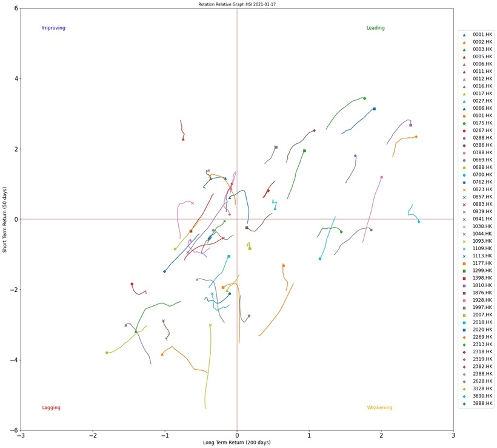

Relative Rotation Graphs 原本係一個可視化嘅工具(visualisation tools)用黎展示經濟指標周期性轉動(cyclical rotation) 從而估計當時經濟正值嘅階段
Relative Rotation Graphs 嘅x axis 係經濟指標嘅長遠走勢(Trend)，y axis 係經濟指標嘅短期動量（Momentum)
而Relative Rotation Graphs 會分為四個階段：Leading -> Weakening - > Lagging -> Improving
當中Leading代表經濟指標處於最強階段，不單長遠走勢強勁， 短期動量也強。而若果經濟指標長遠走勢雖然強勁，但短期動量開始下降，個經驗指標就會落入weakening區。如果動量持續下降，長期趨勢都變弱嘅時候，就會落入Lagging區。最後，Improving區代表經濟指標由長期持續下降趨勢到開始有短期上升動量嘅階段
呢個Graph亦可以用喺股票市場上面，而我分享嘅例子就更改左少少，加入左benchmark factor同standardise左個x,y axes
x,y axes 用左股票嘅長短期annualised sharpe ratio adjusted with HSI return 黎代表該股票短期和長期跑贏定跑輸大市
👇🏻👇🏻Python Code (Patrons Only)👇🏻👇🏻